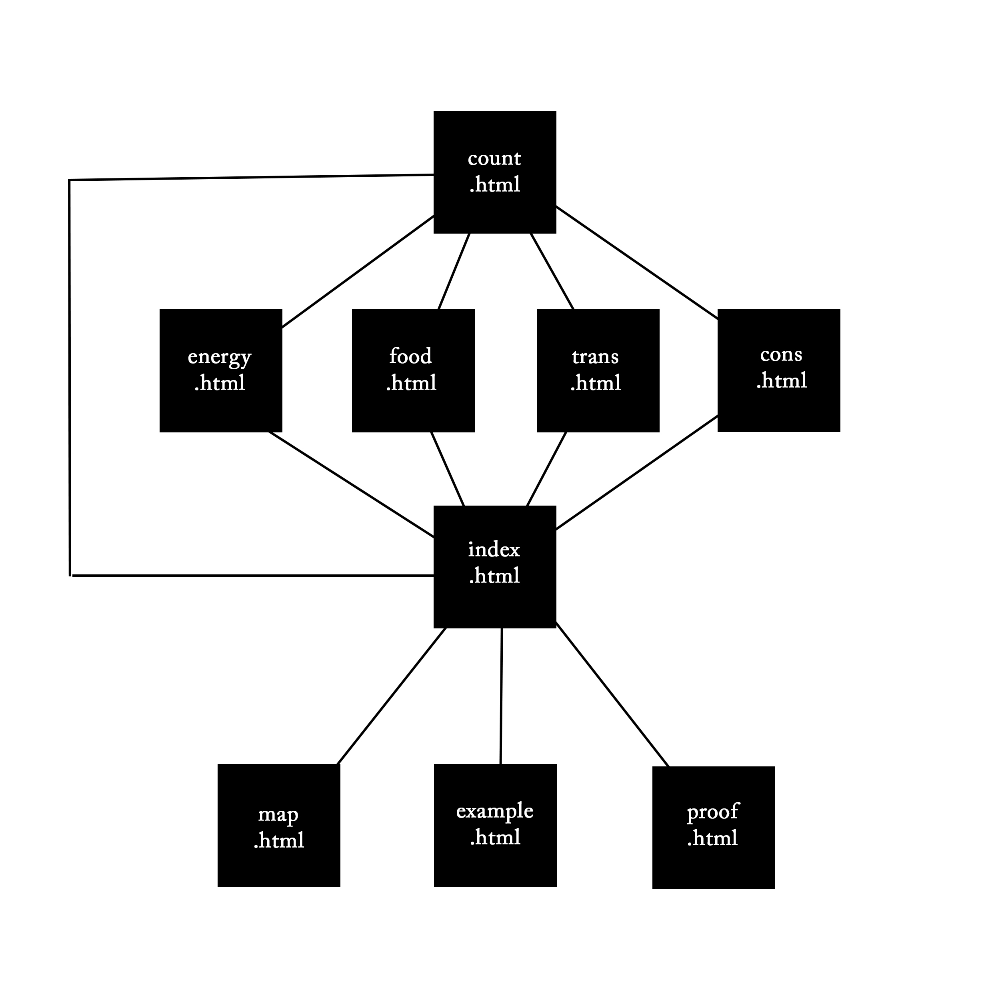
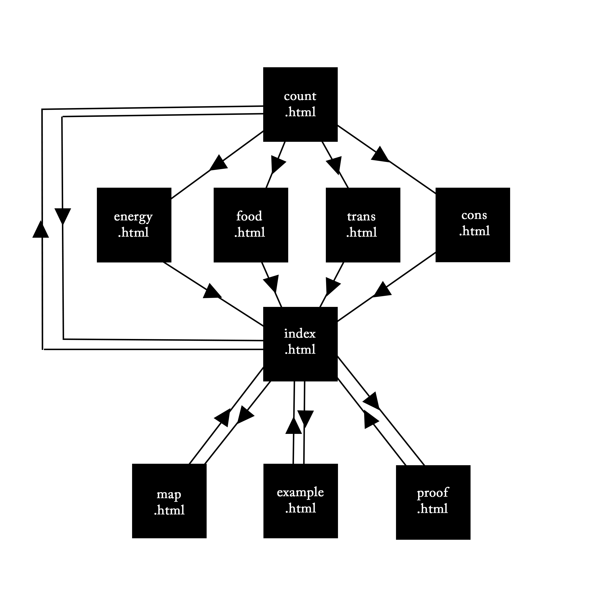

This map of the website is a type a graph known as a tree. It shows the heirarchy of pages but not every possible connection. A graph is a group of vertices that can be connected to other vertices with edges. This map is a tree because any two pages have only one path between them. Alternatively we can say that there are no cycles.
This map now shows every connection on this website. It is no longer a tree because it has multiple paths between pages. For example you could go from count.html to proof.html via index.html or via energy.html and index.html. However, this is a planar graph becasue it can be drawn with no intersecting edges. A property of all planar graphs is that they will satisfy Euler's formula.
It is important to note however, that a graph that satisfies Euler's formala is not necessarily planar. One must still prove that it can be drawn without intersecting edges.
A problem with this map is that it implies some connections that do not exist. For example, you might think that you can get to energy.html from index.html, however only the inverse is possible. To resolve this we need a directed graph.
In a directed graph, each edge only has one direction on connection. In this updated map, it is very clear which page links to which page. Can you see where additional connections might be helpful?